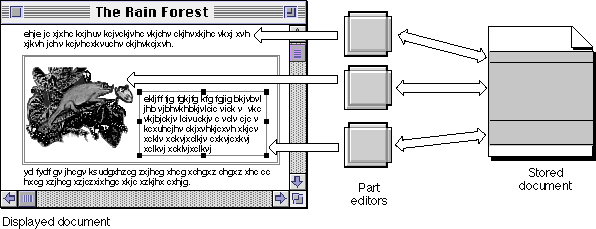
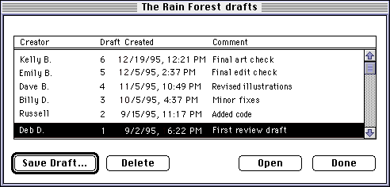
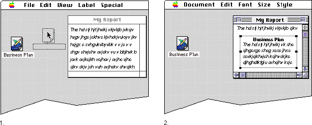
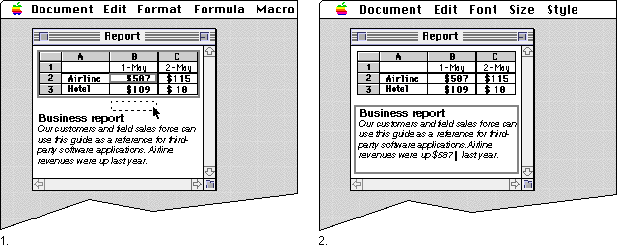
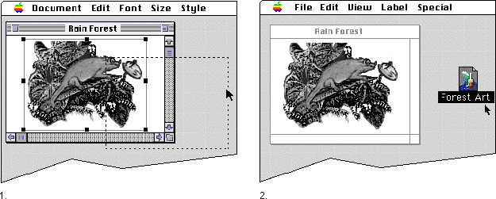
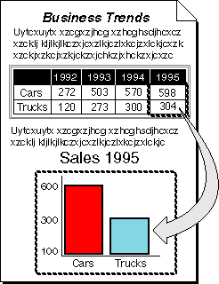

Storage and Data Transfer
All the data of all parts in a document, plus all information about frames and embedding, is stored in a single document file. OpenDoc does not require the user to manually manage the various file formats that make up a compound document; OpenDoc manages and holds all the pieces. Thus, storage is easier for developers, and exchanging documents is easier for users.OpenDoc uses the same data-storage concepts for data transfer (clipboard, drag and drop, and linking) that it uses for document storage.
Storage Basics
The OpenDoc storage system manages persistent storage for parts. It is a high-level persistent storage mechanism that allows multiple part editors to share a single document file effectively. The storage system is implemented on top of the native storage facilities for each platform that supports OpenDoc.Storage in OpenDoc is based on a system of structured elements, each of which can contain many data streams. The system effectively gives each part its own storage stream, as shown in Figure 1-15. This design maintains maximum compatibility with the many existing application storage systems that assume stream-based I/O.
The core of the OpenDoc storage system is the storage unit, an element that can contain one or more data streams. The data of each part in a document is kept in at least one storage unit, distinct from the data of other parts. Storage units can also include references to other storage units, and OpenDoc uses chains of such references to store the embedding relationships of the parts within a document. Storage units and the other elements of structured storage of OpenDoc are described further in Chapter 7, "Storage."
Figure 1-15 Multiple data streams in a single OpenDoc document

Document Drafts
OpenDoc documents have a history that can be preserved and inspected through the mechanism of drafts. A draft is a captured record of the state of a document at a given time; the user decides when to save the current state of a document as a new draft and when to delete older drafts. All drafts are stored together in the same document, with no redundantly stored data.The OpenDoc draft mechanism helps in the creation of shared documents. When several users share a document, each in turn can save the current state of the document as a draft and then make any desired changes. Users can always look back through the drafts of the document they and the others have created. Also, if translation occurs during the process of sharing documents, the user can possibly consult an older draft to recapture formatting information that might have been lost in translation. Figure 1-16 shows an example of the dialog box through which the user can manipulate drafts.
Figure 1-16 The Drafts dialog box

Parts also interact with their drafts to create the objects needed for embedding other parts and to create links to data sources. See "Drafts" for more information.Stationery
OpenDoc gives the user additional aids for constructing compound documents. One of these aids, central to the user's ability to create new kinds of parts, is stationery.Stationery pads are specialized parts or documents whose only purpose is to serve as templates for the creation of other parts. A stationery part is never opened; when the user attempts to open a stationery part, a copy of that part is created and opened instead. Users can create stationery with specific formatting and content to create letterheads, forms, or other templates. Stationery parts can be embedded in documents, or they can exist as stand-
alone documents themselves.Figure 1-17 shows an icon for a stationery document on the desktop. The user drags the stationery icon and drops it onto the document, at which time a copy of the stationery part is embedded in the document and opened into a frame, displaying the part's initial contents.
Figure 1-17 Dragging a stationery part from the desktop into a window

It is typically through stationery that users first gain access to your part editor. When you develop and ship a part editor, you also provide one or more stationery documents. To create a part using your part editor, the user does not launch the editor; instead, the user double-clicks on your stationery document or drags it into an open document window.Data Transfer
OpenDoc includes several built-in data-transfer features that allow users to create and edit OpenDoc documents more easily than is usual with conven-
tional applications. Users can put any kind of media into a document with simple commands, and OpenDoc helps your part editor respond to those commands.In OpenDoc data transfer, the source is the part (or the portion of its content) that provides the data being transferred, and the destination is the part (or the location in its content) that receives the transferred data.
When source data in one format is transferred to a destination whose data is written in another format, translation may be necessary; see"Translation".Translation usually involves loss of data, and it is less necessary if part editors provide standard content formats, as promoted by CI Labs; see "Cross-Platform Consistency and CI Labs".
Clipboard
Clipboard data transfer allows for easy exchange of information among documents, using menu commands familiar to most users. OpenDoc supports clipboard transfer of any kind of data, including multipart compound data, into any document.Clipboard transfer is a two-stage process. The user first selects some portion of the content of the source part (possibly including embedded parts) and places a copy of that content onto the clipboard buffer by executing the Cut or Copy command. At any subsequent time, the user can copy the clipboard data to the destination (back into the same part, into another part in the same document, or into another document) by executing the Paste command.
As noted in the section "Embedding Versus Incorporating", OpenDoc allows for an intelligent form of pasting in data transfer, anticipating user expectations about the result of a pasting operation when the destination holds a different kind of data from the source. Subject to user override, the destination part can decide whether to embed the data as a separate part or incorporate it as content data into itself.
Clipboard transfer is discussed in detail in the section "Handling Pasted or Dropped Data".
Drag and Drop
Drag-and-drop data transfer is similar to clipboard transfer, except that it involves direct user manipulation of the data being transferred, rather than the intermediate use of the clipboard. OpenDoc supports drag and drop within documents, across documents, and to the desktop. Users can even drop non-OpenDoc data into OpenDoc parts.Figure 1-18 shows the use of drag and drop to transfer a piece of information from a spreadsheet part to a text part within a document. As with clipboard transfer, OpenDoc uses intelligent pasting in drag and drop; the spreadsheet part includes a plain-text version of the selection being dragged, so that the destination part (the text part) can directly incorporate it at the location of the drop.
Figure 1-18 Using drag and drop within a document

Drag and drop works equally well between separate documents. In terms of the user experience, the data-transfer facilities of OpenDoc actually blur the distinction between a part and a document. If the user drags a closed document (represented as an icon on the desktop) into an open document window, a copy of the transferred document either becomes an embedded part in the window's document or is incorporated into the intrinsic content of the document's root part. Likewise, if the user selects the frame of an embedded part in an open document window and drags that part to the desktop, a copy of that part immediately becomes a separate, closed document represented by icon, as shown in Figure 1-19.Figure 1-19 Dragging a part to the desktop

Drag and drop is discussed in detail in the section "Drag and Drop".Linking
Linking allows the user to view, within a part's frame, data that is a live (updatable) copy of data in a different location--in the same frame, in a different frame, in a different part, or even in a different document. When the data in the source location changes, OpenDoc notifies the destination part--either automatically or manually, depending on user preference--and facilitates updating the destination copy.Linked data can include embedded parts, and the source of a link can be in the same part as its destination, in a different part in the same document, or in an entirely different document. Figure 1-20 shows a simple example of linking between two parts in a document. In this example, whenever the user changes the values in the linked spreadsheet cells, the bar graph adjusts its display accordingly.
Figure 1-20 Linking spreadsheet data to a bar chart

Users create a link when pasting data, using a dialog box to link the source of the data to its destination. (See Figure 8-3 for an example of the dialog box.) This simple user interface to linking makes the use of links more attractive to users than some other systems do.Linking is discussed in detail in the section "Linking".